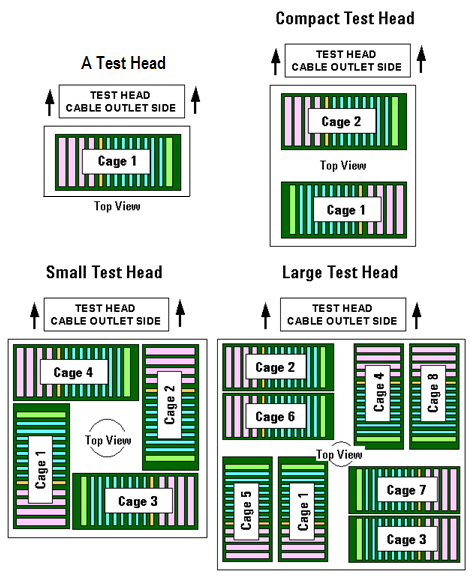
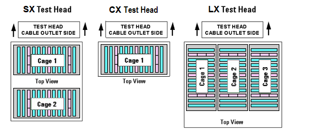
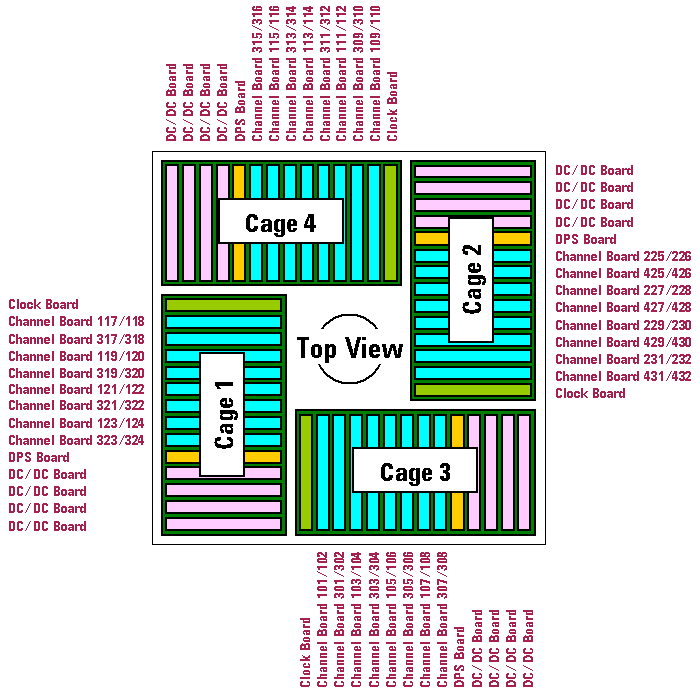

Card cages
The layout and the number of card cages differs in the respective test heads:


General structure of card cages
The 14 slots of each card cage are configured as follows:
- Four DC power supply slots for DC/DC converter cards. Each DC/DC card provides power to two channel cards.
- One DPS slot for the device power supply.
- Eight IO slots (Channel Board slots) for Pin Scale digital cards or DC Scale cards
The following example shows the layout of the cards inside the small test head with the full-digital configuration.

Differences for EXA Scale test head card cages
The 12 slots of each card cage are configured as follows:
- Three DC power supply slots for DC/DC converter cards. Each DC/DC card provides power to up to three cards.
- Nine card slots for instrument cards.
Functional changes
- Introduced before SmarTest 6.3.2
- SmarTest 7.10.0: EXA Scale test heads introduced